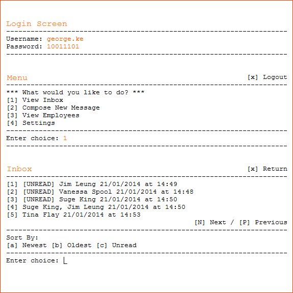

Messenger Database
Nov. 2012 - Jan. 2013
This project, developed in Java, allows the user to create an account and to send/receive messages from other users also in the system. It has a variety of features such as Admin accounts that can manage users and conversations, various ways to sort lists, and user-inputted information for each profile.
Being a database, the program stores user info such as login information as well as conversation logs by writing to a text file.
Object-Oriented Concepts such as modularization and polymorphism were employed to create an efficient and easily-maintainable code. This project underwent the software development cycle, from being designed, to being implemented, and to being debugged and tested.
Check out my GitHub repository for the source code of this project as well as more detailed features and user documentation.
- 


Connect Four
Nov. 2011 - Mar. 2012
This game uses javax.swing in Java to implement a Graphical User Interface that updates based on keystrokes as well as mouse input. It of course allows either 1 or 2 players to play a game of connect four against a computer or against each other, respectively.
Playing against the computer involves AI logic that blocks potential wins, blocks setups for three-in-a-rows, and plays to win.
Additionally, this program features a number of options to customize the game such as a player's piece and the number of games needed to win.


Tic Tac Toe
Nov. 2010 - Mar. 2011
Coded in Turing, this program uses logic based on Tic Tac Toe rules to allow two players to play against each other.
A Graphical User Interface is implemented for a welcome screen, the main game screen, and a victory screen.